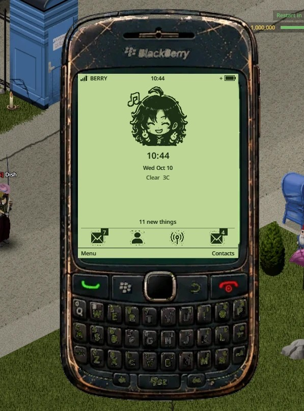
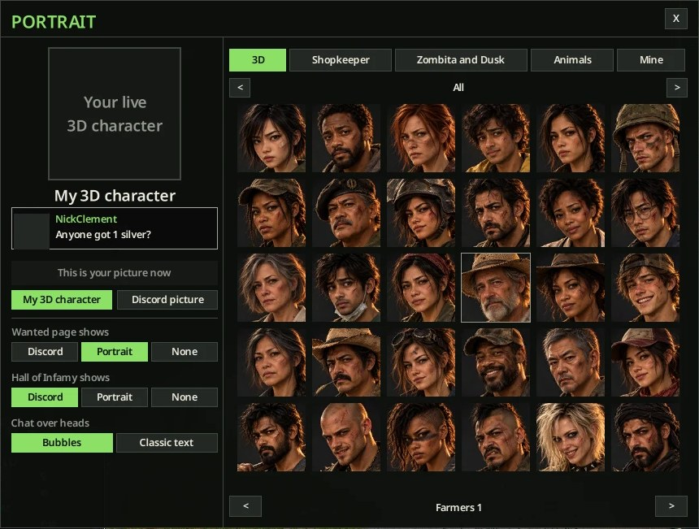

The in-game phone
In-game phone. Six phone models with messages, a wallet, map pins, music that draws zombies on speaker, and games including a true-scale Space Impact remake and chess with Elo. Phone chat runs both ways with Discord, and game chat has its own sticker picker with emoji, Zombita's set, each player's own pack, favourites and moving GIFs. The game can't play GIFs, so each one is stored as frames and shown in turn.

The Flip, one of the six phone models, with its own monochrome screen.

The same Jobs app on the keypad phone, drawn for its small screen. Every phone model has its own interface, not just a new skin.

Another model, the Berry, with a full keyboard and its own small-screen layout. Screenshot by Dish.

The same Jobs app again, laid out for the Berry. Screenshot by Dish.

Messages and Contacts. Direct chats and groups, with Discord messages landing in the same threads, and every player gets their own number. Screenshot by Warrior.

The in-game phone. Jobs, Cards, Find My Car, Factions and the bus on the first screen; games, leaderboards and chess on the second.

The Portrait app on the in-game phone: pick the face people see over your head when you talk, and where else it shows.

The same picker on the website, with search and categories, and a preview of the bubble over your head.